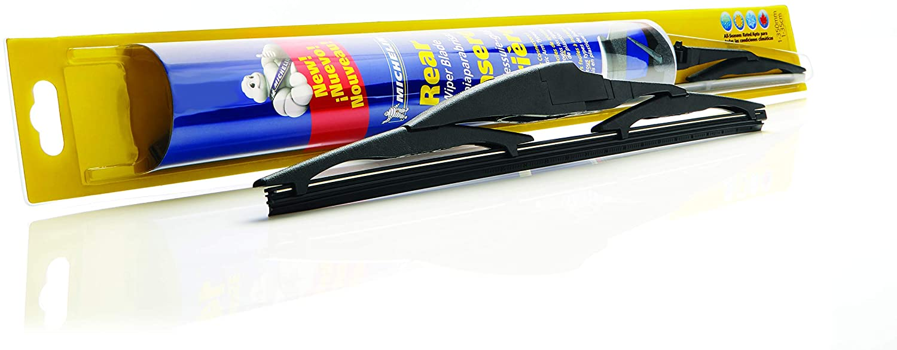

Back To Home Page
Step 1: Buy Your New Blades
Before you go to buy them, make sure you know the exact model of your car. This includes the year, make, model, and further specifications such as, "type." Go to your nearest auto body shop (or walmart) and give them your car's info. They will be able to look it up and tell you your options. There will many options for blades ranging from $5 to $25 each (you'll usually need to buy a different blade for each side). A good rule of thumb is to not buy the cheapest, or the most expensive ones. It's usually a good idea to replace both blades at once, if one has gone bad, the other can't be much better.
